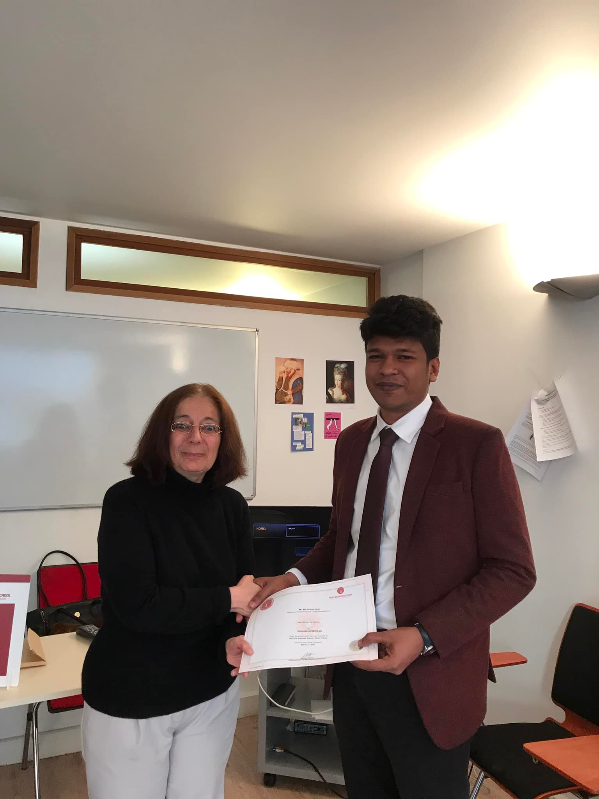

The Mission: Advancing Medical Education in Bangladesh
In March 2022, I had the privilege of serving as the Program Coordinator for a high-level international study tour focused on "Views Sharing and Observation about Simulation/Skill Lab." This program, approved by the Government of Bangladesh, was organized for senior officials from the Ministry of Health and Family Welfare (MoH&FW) and the Directorate General of Medical Education (DGME).
The objective was to expose the delegation to state-of-the-art medical training technologies in Europe. As highlighted in expert sessions during our tour, simulation-based training is crucial for bridging the gap between theoretical knowledge and practical clinical skills, ultimately enhancing patient safety and reducing medical errors. The insights gained were intended to inform the development of modern skill labs in Bangladesh.
A Pan-European Collaboration
The study tour was a collaborative effort involving distinguished institutions in France and Italy, providing the delegation with a comprehensive European perspective on medical education.
Paris Graduate School, France
In Paris, the delegation attended sessions at the Innovative Knowledge Institute - Paris Graduate School. The program focused on the practical application and observation of simulation technologies. I was formally invited as part of the organizing team and also received a certificate for completing the course on "Simulation/Skill Lab."
My certificate of participation from the Paris Graduate School.
Rome Business School, Italy
In Rome, the tour included an in-depth session at the Rome Business School on "Simulation based medical training and education." The presentation covered future perspectives, including the role of Extended Reality (XR), virtual patient simulations, and the integration of new technologies into medical curricula.
A key presentation slide from Rome Business School on the Virtuality Continuum in medical training.
My Role as Program Coordinator & Team Coordinator
On behalf of Management and Training International Ltd. (MTI Ltd.), my role was to ensure the seamless execution of this complex international program. As officially designated in the invitation letter, I served as the Programmer & Team Coordinator, acting as the critical link between the Bangladeshi delegation and the European host institutions.
My responsibilities included:- Liaison and Communication: Acting as the primary point of contact to facilitate smooth communication and scheduling between the senior officials of the MoH&FW, Paris Graduate School, and Rome Business School.
- Logistical Management: Overseeing and coordinating all logistical aspects of the tour, including travel arrangements, accommodation, and daily itineraries for the 12-member delegation across France and Italy.
- On-Site Facilitation: Being present on the ground to ensure all academic sessions, lab observations, and official meetings proceeded as planned and met the tour's objectives.
- Active Participation & Support: Participating directly in the training sessions to better understand the subject matter, which enabled me to provide more effective support and context to the delegation.
- Documentation & Reporting: Assisting the delegation in gathering the necessary information and materials required for their official report to the ministry, as mandated by the Government Order.
Impact and Conclusion
The study tour was a significant success, providing the MoH&FW delegation with invaluable, firsthand insights into the technologies and methodologies that are shaping the future of medical training. This experience directly contributes to the strategic goal of enhancing the quality and safety of healthcare in Bangladesh by modernizing its medical education infrastructure. It was an honor to coordinate such an impactful international project.
Interested in International Program Coordination?
My experience in managing logistics and coordinating between high-level government delegations and international institutions can be an asset to your project. Let's connect.
Contact Me